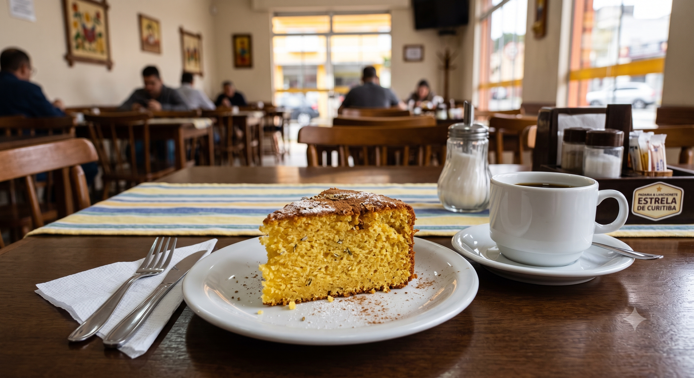

Quanto custa o que você dá de GRAÇA?
Identificar o valor e o custo do que é dado de brinde pode salvar seu lucro no final do mês
O café servido junto com o almoço. Aquele sachê de molho que acompanha a salada. O guardanapo embalado com os talheres. O pãozinho que acompanha a sopa. A sobremesa oferecida como cortesia.
Separadamente, eles parecem insignificantes. Afinal, qual o impacto de alguns centavos em uma operação inteira?

Na confeitaria e restaurante Doce Pecado, de Curitiba (PR), o almoço por quilo inclui uma fatia de bolo e uma xícara de café passado. Além disso, os clientes recebem guardanapos embalados e sachês de tempero para a salada.
A diferença é que, nesse caso, os proprietários sabem exatamente por que oferecem esses itens. "O custo das cortesias já está incorporado ao preço do quilo. Além disso, é uma forma de apresentar outros produtos da confeitaria para quem vem apenas almoçar", explicam os sócios Vera Lucia Weber, Elizabeth Weber e Cledson Jarek.
O problema nunca é um sachê!
Segundo Bianca Fraga, especialista em negócios gastronômicos do Grupo Mindhub, o erro mais comum é analisar cada item isoladamente.
"É só um sachê de R$ 0,15."
A frase parece inofensiva. Mas basta multiplicar esse valor pela rotina da operação para entender o tamanho da conta:
Três sachês por pedido
em 1.500 pedidos por mês
somam mais de R$ 8.000 por ano
Para Bianca, muitos empreendedores passam meses tentando entender por que a margem diminuiu, sem perceber que a resposta está espalhada em dezenas de pequenas concessões feitas ao longo da operação.
"O dono raramente quebra por causa do prato principal, mas ele pode quebrar pela soma do que dá de graça sem perceber."
Então, quando a cortesia faz sentido?


Teste de demanda real
Augusto & Pamela Saalfeld, do canal casal.urbano no Instagram, tem um restaurante que opera no delivery. Eles produziam 400 saladas por dia como item incluso e desconfiaram que parte dos clientes não consumiam o que recebiam, mesmo de graça.
Colocaram uma pergunta simples no cardápio: "você quer a salada?"
Descobriram que 20% dos pedidos já dispensavam o item.
Quando passaram a cobrar R$ 0,50 pela opção, a adesão caiu para 40%.
O resultado do primeiro mês: R$ 7 mil de diferença a mais no caixa.
Controle contábil
Isso NÃO significa que toda cortesia deva ser eliminada. Existem duas contas para fechar essa decisão:
A demanda real: se o cliente pede, elogia ou sente falta quando o item some do prato
e o cálculo financeiro de quanto custa produzir e servir aquilo que é oferecido de graça ao cliente.
DECIDA COM
CONSCIÊNCIA!
1º PASSOFICHA TÉCNICA
Crie fichas técnicas detalhadas para todos os itens do cardápio, inclusive para as cortesias.
Depois de reunir informações como ingredientes, quantidades utilizadas, rendimento da receita, perdas no preparo e custo de cada insumo, o empreendedor consegue calcular exatamente quanto custa produzir cada item.
2º PASSOCUSTO DA MERCADORIA VENDIDA
Com as fichas técnicas em mãos, o próximo passo é calcular o Custo da Mercadoria Vendida (CMV), indicador que mostra quanto do faturamento está sendo consumido pelos ingredientes da operação.
Entenda melhor:
A ficha técnica mostra o custo de cada item isolado
O CMV mostra se a soma de todos os custos está dentro do que a operação consegue sustentar
Um item pode custar poucos centavos e ainda assim empurrar o CMV para fora da faixa ideal, quando multiplicado pelo volume de vendas do mês. Um CMV fora da faixa, por sua vez, não aponta sozinho qual item pesa. Só a ficha técnica, item por item, mostra isso.
O cálculo do CMV, no final,
é simples:
(Estoque Inicial + Compras – Estoque Final)
÷ Vendas x 100
Como ler cada parte:
1. Estoque inicial
Quanto de insumo havia em estoque no começo do período.
2. Compras
Quanto foi comprado de insumo durante o período.
3. Estoque final
Quanto sobrou de insumo no fim do período.
4. Vendas
Faturamento total do período.
O número é uma porcentagem que avisa se existe ou não um problema. A ficha técnica mostra onde.
| Tipo de negócio | CMV Ideal |
|---|---|
| Restaurante tradicional | 28% – 35% |
| Pizzaria | 27% – 33% |
| Hamburgueria | 28% – 34% |
| Sushi / Comida japonesa | 32% – 38% |
| Café / Padaria | 27% – 33% |
| Bar / Pub | 29% – 37% |
Um restaurante pode calcular o CMV, ver que está fora da porcentagem ideal do seu tipo de negócio e não fazer ideia do motivo.
Aí ele vai atrás da ficha técnica de cada item, inclusive das cortesias, para achar o que está consumindo mais do que deveria.
É assim que o sachê de R$ 0,15 aparece: sozinho, ele não move o CMV visivelmente, mas a ficha técnica dele, multiplicada pelo volume, é o tipo de coisa que explica a diferença entre o CMV real e o esperado.
O custo da cortesia não se resolve com uma conta só. O erro mais comum é achar que dá para decidir olhando só o preço do item (o sachê custa R$ 0,15, é insignificante) ou só a preferência do cliente (ele gosta, então mantém). Nenhuma das duas sozinha decide certo.
“O ‘de graça’ mais inteligente é aquele que tem baixo custo e alto valor percebido. Se não vende, não diferencia, e ninguém nota, tem que cortar sem dó.”